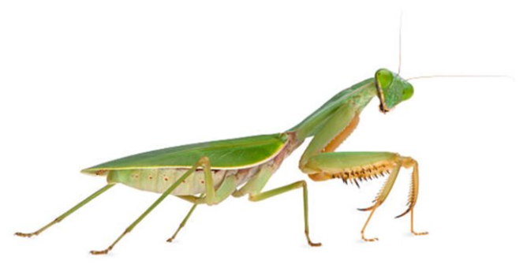
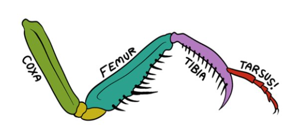

Praying Mantis - Mantis religiosa
The mantis forelegs are thick and strong with spikes on the underside to allow the mantis to have a firm grip on its prey, and for defense.


The forelegs are usually curled up into the “praying” position and can spring out to great lengths so that the mantis can catch its prey by surprise.